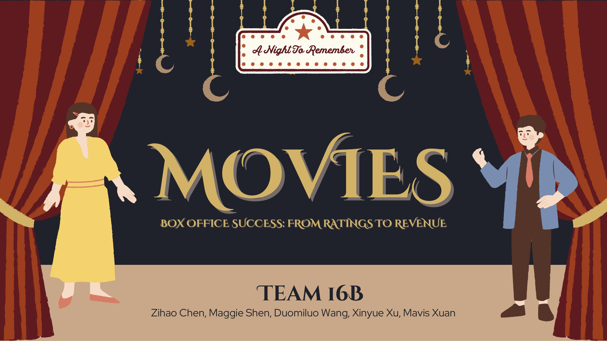

Box Office Success Analysis
The Problem
In 2024, global box office gross reached nearly $25 billion — yet financial success remains deeply uneven. Producers and investors face a persistent strategic dilemma: should they allocate resources toward bigger budgets for mass appeal, or invest in script quality and genre selection to drive ratings? This project applied data analytics to answer that question empirically, using historical data on over 10,000 commercial films.
Research Questions
- Does rating significantly impact revenue? — Beyond the obvious effect of budget, does audience satisfaction act as a measurable financial multiplier?
- What distinct factors affect ratings and performance the most? — Can we identify distinct market segments defined by genre, budget, and runtime that consistently achieve high ratings or high capital efficiency?
Data
We used the Full TMDB Movies Dataset 2024 (1M+ records) sourced from Kaggle. After strict financial filtering — removing records with budget or revenue below $1,000 — the dataset was reduced to a high-quality core sample of 10,670 commercial films with complete budget, revenue, and rating data. Feature engineering included JSON parsing to extract primary genre and datetime processing to capture release year and month.
Approach
Two analytical methods were applied to address each research question:
- OLS Regression — log-transformed both revenue and budget to handle right-skewed financial distributions, then included vote average, vote count, runtime, and one-hot encoded primary genre as predictors. This isolated the marginal financial value of a single rating point while holding other factors constant.
- K-Means Clustering (K=4) — standardized all features with StandardScaler and tested K=3 through K=6. K=4 produced the most strategically distinct market segments, separating categories that smaller K values merged and avoiding redundant micro-segments from larger K values.
Results
The OLS model achieved an Adjusted R² of 0.696, explaining 69.6% of the variance in revenue. Key findings:
- The quality premium: holding budget constant, a 1-point increase in audience rating corresponds to an approximate 12% increase in revenue (p = 0.0002) — critical acclaim acts as a statistically proven multiplier on top of production budget
- Genre ROI winners: Music, Horror, and Family genres consistently outperform their budgetary expectations, offering higher return on investment potential
- Genre ROI losers: Western, War, and History genres showed negative coefficients — high production costs relative to revenue generated
K-Means clustering revealed four actionable market personas:
- Global Blockbusters — high budgets (~$51M avg), Adventure-dominated, ~226% ROI
- Efficient Horror Niche — low budgets (~$13M avg), Horror-dominated, ~270% ROI — the “Hidden Gem” strategy that outperforms blockbusters on capital efficiency
- Quality Standard — Drama-dominated, highest average rating (6.42), runtime ~112 min
- Low Tier — low budgets, low ratings (avg 3.67), short runtimes (~65 min) — the industry failure zone
As a practical demonstration, the model predicted Avatar: Fire and Ash ($250M budget, 7.3 expected rating, Sci-Fi genre) would generate $1.25B in global revenue with a 400% ROI.
Presentation Slides

Reflections
The most counterintuitive finding was that Horror outperforms Blockbusters on ROI despite a fraction of the budget — reframing genre selection from a creative decision into a capital allocation strategy. The project also reinforced the importance of log-transforming heavily skewed financial data before applying linear models, and the value of prioritizing cluster interpretability over mechanical optimization metrics when selecting K.